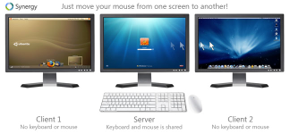
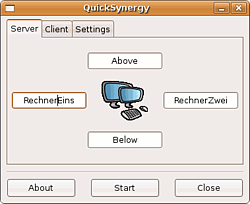

Synergy
Dieser Artikel wurde für die folgenden Ubuntu-Versionen getestet:
Ubuntu 14.04 Trusty Tahr
Zum Verständnis dieses Artikels sind folgende Seiten hilfreich:
 Mit Synergy
Mit Synergy  lassen sich mehrere Rechner, die jeweils ihren eigenen Bildschirm haben, mit einer Maus und einer Tastatur bedienen. So lässt sich z.b. der Laptop bequem mit der ordentlichen Tastatur und Maus des auf dem selben Schreibtisch stehenden Desktop-Rechners bedienen, ohne dass man besondere Hardware kaufen muss. Voraussetzung ist, dass alle Rechner miteinander vernetzt sind.
lassen sich mehrere Rechner, die jeweils ihren eigenen Bildschirm haben, mit einer Maus und einer Tastatur bedienen. So lässt sich z.b. der Laptop bequem mit der ordentlichen Tastatur und Maus des auf dem selben Schreibtisch stehenden Desktop-Rechners bedienen, ohne dass man besondere Hardware kaufen muss. Voraussetzung ist, dass alle Rechner miteinander vernetzt sind.
Um von einem Rechner auf den nächsten zu wechseln, bewegt man die Maus einfach über den Bildschirmrand hinaus, in Richtung des zweiten Rechners und schon bedient man nicht mehr den Rechner, an dem eigentlich Maus und Tastatur angeschlossen sind, sondern den anderen Rechner, zu dem der Bildschirm gehört, auf dem sich der Mauszeiger jetzt befindet.
Versionen¶
 Der Quelltext von Synergy ist zwar unter der GNU Public License (GPL v.2) frei verfügbar, aber die Nutzung ist mittlerweile nicht mehr kostenlos. Die Entwickler unterscheiden zwischen einer Basic- und einer Pro-Version, wobei letztere über SSL-Verschlüsselung und direkten E-Mail-Support verfügt. Da die früher bereits in der allgemein verbreiteten Synergy-Version implementierte Verschlüsselung in der Basic-Version entfernt/deaktiviert wurde, ergibt sich für Ubuntu-Nutzer die paradoxe Situation, dass die ältere in den offiziellen Paketquellen enthaltene Version 1.4.12 einen größeren Leistungsumfang als die aktuelle Basic-Version hat. Die ebenfalls über die Paketquellen verfügbare Version 1.6.2 erlaubt zwar ebenfalls das Einschalten einer Verschlüsselung, aber nicht die Auswahl unter vier verschiedenen Verschlüsselungsprotokollen (siehe auch synergy).
Hinweis:
Synergy bot bis zur Version 1.4.11 keinerlei Sicherheitsmechanismen, d.h. diese Programmversionen konnten nur in vertrauenswürdigen Umgebungen bzw. Netzwerken verwendet werden. Die in den offiziellen Paketen bereitgestellten Versionen ab 1.4.12 unterstützen hingegen verschiedene Verschlüsselungsstandards. Zum aktuellen Stand siehe Security im Synergy-Wiki.
Installation¶
Es muss nur ein Paket auf jedem Rechner, der über Synergy die Eingabegeräte teilen soll, installiert [1] werden:
synergy (universe)
 mit apturl
mit apturl
Paketliste zum Kopieren:
sudo apt-get install synergy
sudo aptitude install synergy
Konfiguration¶
Grafische Benutzeroberflächen¶
Neuere Versionen von Synergy verfügen über eine grafische Benutzeroberfläche, die nicht nur eine einfache und schnelle Konfiguration erlaubt, sondern auch verschiedene Fehlersuchfunktionen bereitstellt. Aus dieser Oberfläche heraus ist es - falls gewünscht - möglich, eine traditionelle Konfigurationsdatei abzuspeichern und mit dieser weiterzuarbeiten.
Bei der Erstkonfiguration ist es sinnvoll, zunächst "Interaktive Konfiguration" zu wählen und die Einstellungen hierüber zu testen. Im zweiten Schritt lässt sich diese Konfiguration in eine Datei sichern und fortan verwenden, was insbesondere bei wechselnden Netzwerkeinstellungen (Büro, Zuhause) vorteilhaft sein kann.
Deutlich hinter die Möglichkeiten der Originaloberfläche von Synergy fällt das recht einfach gehaltene und inzwischen wohl obsolete QuickSynergy zurück.
Konfigurationsdatei¶
Das händische Erstellen einer Konfigurationsdatei dürfte nur in Ausnahmefällen sinnvoll sein. Die weitere Beschreibung dieser Datei dient mehr dem Verständnis als der Bedienung des Programms.
Der Rechner, an dem sich Tastatur und Maus befinden, wird als Server bezeichnet. Die Konfigurationsdatei auf diesem Rechner ist relevant für beide (ggf. mehrere) Rechner. Synergy wird über die Datei /etc/synergy.conf konfiguriert. Diese ist nach der Installation des Paketes noch nicht vorhanden. Stattdessen gibt es eine Beispielkonfiguration /etc/synergy.conf.example.
# sample synergy configuration file
#
# comments begin with the # character and continue to the end of
# line. comments may appear anywhere the syntax permits.
section: screens
# three hosts named: moe, larry, and curly
moe:
larry:
curly:
end
section: links
# larry is to the right of moe and curly is above moe
moe:
right = larry
up = curly
# moe is to the left of larry and curly is above larry.
# note that curly is above both moe and larry and moe
# and larry have a symmetric connection (they're in
# opposite directions of each other).
larry:
left = moe
up = curly
# larry is below curly. if you move up from moe and then
# down, you'll end up on larry.
curly:
down = larry
end
section: aliases
# curly is also known as shemp
curly:
shemp
endAm einfachsten ist es, die Vorlage mit
sudo cp /etc/synergy.conf.example /etc/synergy.conf
an die richtige Stelle zu kopieren und diese dann an die vorhandene Installation anzupassen [2]. Um diese Einstellung benutzerspezifisch festzulegen, kann die Datei auch unter ~/.synergy.conf (bei Installation über das Fremdpaket im DEB-Format) abgespeichert werden. Bei der Version aus den offiziellen Paketquellen verwendet man ~/.config/Synergy/Synergy.conf.
Hier ist ein Beispiel für zwei Rechner, die nebeneinander auf dem Schreibtisch stehen:
# Zwei Rechner vorhanden. RechnerEins (Hauptrechner)und RechnerZwei.
# RechnerEins befindet sich links von RechnerZwei
section: screens
RechnerEins:
RechnerZwei:
end
section: links
RechnerEins:
right = RechnerZwei
RechnerZwei:
left = RechnerEins
endZunächst handelt es sich bei den Bezeichnungen "RechnerEins" und "RechnerZwei" um frei wählbare Namen. Der Start des Serverdienstes bzw. der Clients vereinfacht sich jedoch, wenn hier bereits die entsprechenden Computernamen verwendet werden.
Benutzung¶
Zur Benutzung muss Synergy auf dem Server und je eine Version auf den Clients gestartet werden. In der grafischen Benutzeroberfläche ist hierzu lediglich die jeweilige Rolle (Server/Client) auszuwählen und per Start-Knopf zu bestätigen.
Der Start lässt sich auch über die Kommandozeile durchführen, nutzt dann allerdings leicht unterschiedliche Befehle, wie nachfolgend beschrieben.
Synergy Server¶
Der Synergy Server muss auf dem Rechner, an dem auch die Eingabegeräte installiert sind, geladen werden [3]:
synergys
Wurde in der Konfigurationsdatei für den entsprechenden "Screen" nicht der Hostname des Servers verwendet, so muss der Server mit
synergys -n SCREEN_NAME
gestartet werden.
Diese Befehle starten synergys im Hintergrund. Um eventuelle Fehlermeldungen zu sehen, empfiehlt es sich, synergys zunächst in Vordergrund zu starten. Dies geschieht durch zusätzliche Angabe der Option -f.
Synergy Client¶
Der Client muss nun noch auf dem zweiten Rechner mit der Angabe des Servers gestartet werden:
synergyc <Server>
Auch hier muss ein abweichender Screen-Name gegebenenfalls mittels der Option -n übergeben werden. Der Server kann auf verschiedene Arten angegeben werden. Die einfachste und sicherste Variante ist die Angabe per IP-Adresse. Unter Ubuntu kann auch Avahi verwendet werden, indem man den Server mit HOSTNAME.local angibt, also zum Beispiel "ubuntu.local". Beispiele:
synergyc 192.168.1.2 synergyc ubuntu.local synergyc -n RechnerZwei ubuntu.local
Sofort nach dem Starten des Servers und des Clients sollte man mit der Maus zwischen den Rechnern hin- und herwechseln können. Um eventuelle Fehlermeldungen zu sehen, empfiehlt es sich auch hier, die zusätzliche Option -f zu verwenden.
Problembehebung¶
Es kommt bei einigen Clients zu Problemen beim Erkennen der deutschen Tastaturbelegung. Hier schafft ein einfacher Befehl in der Kommandozeile Abhilfe:
setxkbmap de
Danach ist auch die deutsche Tastaturbelegung auf dem Client Gerät-benutzbar. Um diese Einstellung beim Starten des Systems herzustellen, kann der Befehl setxkbmap de via Autostart nach der grafischen Anmeldung ausgeführt werden.

QuickSynergy¶
QuickSynergy war eine Anwendung, um die grundlegenden Funktionen von Synergy einfach zu konfigurieren. In der Regel bietet sich inzwischen die Verwendung der Originalbenutzeroberfläche an, da diese nicht nur mehr Funktionen unterstützt, sondern - am Anfang recht wichtig - durch differenzierte Fehlermeldungen beim Debugging hilft.
Installation¶
Das Programm kann aus den offiziellen Paketquellen installiert werden:
quicksynergy (universe)
mit apturl
Paketliste zum Kopieren:
sudo apt-get install quicksynergy
sudo aptitude install quicksynergy
Anschließend kann man QuickSynergy bei Ubuntu-Varianten mit einem Anwendungsmenü über "Zubehör -> QuickSynergy" starten.
Konfiguration¶
Zuerst startet man QuickSynergy auf dem Server, also auf dem Rechner, dessen Maus und Tastatur benutzt werden soll. Im Reiter "Share" steht das Bild in der Mitte für den Server. Steht der zweite Rechner z.B. rechts vom Server, trägt man in das Textfeld "Right" den Hostname des zweiten Rechners ein. Den Hostname erfährt man über folgende Terminaleingabe auf dem zweiten Rechner:
hostname
Die letzte Aktion auf dem Server-Bildschirm ist nun die Schaltfläche "Execute" (hieß früher "Start"), damit das Programm startet. Weitere Eingaben sind auf dem Server nicht notwendig.
Danach startet man QuickSynergy auf dem zweiten Rechner und öffnet den Reiter "Use" (hieß früher "Client"). Dort trägt man die IP-Adresse des Servers ein. Diese erfährt man über folgende Terminaleingabe auf dem Server:
ifconfig
Bei Kabelverbindung (
eth0) und WLAN (wlan0) steht die gesuchte IP-Adresse hinter "inet Adresse:", z.B.192.168.0.100. Als "Screen name" kann der Hostname des zweiten Rechners eingetragen werden. Jetzt auch hier auf die Schaltfläche "Execute" klicken und es sollte möglich sein, vom rechten Rand des Server-Bildschirms aus mit der Maus auf den Bildschirm des zweiten Rechners zu gelangen.
Nun funktioniert auch die Server-Tastatur auf dem zweiten Rechner und Text in der Zwischenablage kann von beiden Rechnern benutzt werden.
Links¶
Synergy jetzt kostenpflichtig
 - Pro-Linux, 09/2014
- Pro-Linux, 09/2014QuickSynergy-HowTo
- ein kurzes, aber hilfreiches HowTo zum Quicksynergy-Client mit Hinweisen zu der Verwendung von IP-Adressen und Hostnames bei Server und Client. Blogbeitrag, 02/2008
- Erstellt mit Inyoka
-
 2004 – 2017 ubuntuusers.de • Einige Rechte vorbehalten
2004 – 2017 ubuntuusers.de • Einige Rechte vorbehalten
Lizenz • Kontakt • Datenschutz • Impressum • Serverstatus -
Serverhousing gespendet von